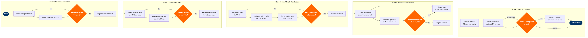

Corporate & Negotiated Rate Management
Network Planning & Scheduling › Revenue Management · 18 L4 steps · 5 phases · 5 decision gates · Updated 2026-03-18 19:13
📊
Process Flow Diagram (BPMN)

📋
L4 Process Steps
| Step | Step Name | Role / Swim Lane | System | Input | Output | KPI | Dec? | Exc? |
|---|---|---|---|---|---|---|---|---|
Phase 1 1.1 |
Receive & log corporate RFP in CRM | Corporate Sales Manager | Salesforce CRM | RFP submission from corporate buyer or TMC (email / GBTA RFP tool) | Qualified lead record with travel volume, routes, and preferred travel dates | RFP response time ≤3 business days; 100% RFPs logged in Salesforce within 24 hrs | N | N |
| 1.2 | Assess historical travel volume & route overlap | Revenue Management Analyst | AWS Redshift | Salesforce CRM opportunity record; prior booking history if existing account | Volume assessment report: annual passenger yield, top 10 routes, seasonality profile | Volume data pull completed within 4 hours of RFP receipt | N | N |
| 1.3 | Qualify account against minimum volume threshold | Corporate Sales Manager | Salesforce CRM | Volume assessment report from step 1.2 | Qualification decision: proceed to negotiation or decline/redirect to SME program | Minimum qualifying threshold: 200 segments/year or $150K annual spend | Y | Y |
Phase 2 2.1 |
Model discount tiers against NRM inventory | Revenue Management Analyst | Amadeus Revenue Management (NRM) | Qualified account route/volume profile; current O&D bid-price curves from Amadeus NRM | Discount tier matrix (3–5 tiers) with revenue impact per tier at projected volume | Modelled revenue dilution <3% vs. unconstrained mix; analysis completed within 2 business days | N | N |
| 2.2 | Benchmark proposed rates vs. ATPCO published fares | Pricing Analyst | ATPCO | Discount tier matrix from step 2.1; ATPCO fare tariff for relevant O&D markets | Competitive rate benchmark showing proposed negotiated fare vs. lowest published fare and competitor filing | Negotiated rate within 5–15% below lowest unrestricted published fare for target markets | N | N |
| 2.3 | Validate revenue impact against load factor targets | Senior Revenue Management Analyst | Amadeus Revenue Management (NRM) | Benchmark report from step 2.2; route load factor targets from network plan | Revenue impact sign-off: approved discount tier set with floor rates per O&D | Approved rates must preserve projected route load factor ≥83% and RASK within 2% of unconstrained forecast | Y | N |
| 2.4 | Draft contract terms and route coverage schedule | Corporate Sales Manager | Salesforce CRM | Approved discount tier set; legal contract template; blackout date calendar | Draft corporate travel agreement: discount schedule, route coverage, blackout dates, minimum commitment, audit rights | Contract draft delivered to corporate buyer within 5 business days of rate approval | N | Y |
Phase 3 3.1 |
File private negotiated fares in ATPCO | Pricing Analyst | ATPCO | Signed corporate travel agreement; approved discount tier set | Private fare codes filed in ATPCO with account-specific fare basis codes, routing rules, and booking class restrictions | Fare filing completed within 24 hours of contract execution; zero filing errors on first submission | N | Y |
| 3.2 | Configure Sabre PRISM access for TMC booking | Distribution Analyst | Sabre PRISM | ATPCO private fare codes; TMC agency IATA codes from contract | Sabre PRISM corporate account record with pseudo-city codes, negotiated fare credentials, and booking class availability | PRISM configuration active and tested within 48 hours of ATPCO filing; TMC confirmation of successful test booking | N | N |
| 3.3 | Set up NDC private offer for NDC-enabled corporates | Distribution Analyst | NDC API Gateway | Corporate account ID; approved discount tier set; NDC-capable TMC flag from contract | NDC private offer configured with corporate token, ancillary bundle inclusions, and fare eligibility rules | NDC offer live within 72 hours for NDC-enabled accounts; ancillary attach rate target ≥35% on NDC-booked itineraries | N | Y |
| 3.4 | Validate fare accessibility across all booked channels | Distribution Analyst | Amadeus GDS | ATPCO private fares; Sabre PRISM config; NDC offer (if applicable) | Channel validation report confirming fare availability in Amadeus GDS, Sabre GDS, Travelport GDS, and NDC | 100% fare accessibility in contracted channels before contract activation date; zero public display of private fares | Y | Y |
Phase 4 4.1 |
Track monthly booking volume vs. contracted commitment | Corporate Account Analyst | AWS Redshift | GDS booking data feed; Amadeus Altéa PSS ticketing records; contract commitment thresholds | Monthly corporate account scorecard: booked segments, revenue, yield vs. target, commitment attainment % | Volume commitment attainment reported by 5th business day of following month; data completeness ≥99% across all channels | N | N |
| 4.2 | Generate quarterly corporate performance report | Corporate Account Manager | Tableau | Monthly scorecard data from AWS Redshift; account-level revenue and yield benchmarks | Quarterly business review (QBR) deck: volume trend, route penetration, yield analysis, missed booking analysis | QBR delivered to corporate buyer within 15 business days of quarter close; 100% of tier-1 accounts receive QBR | N | N |
| 4.3 | Assess volume commitment attainment threshold | Senior Corporate Account Manager | Salesforce CRM | Quarterly performance report; contract minimum commitment clause | Attainment decision: compliant (≥85%), at-risk (70–84%), or non-compliant (<70%) classification | ≥85% of tier-1 accounts maintaining contracted commitment; non-compliant accounts actioned within 10 business days | Y | Y |
| 4.4 | Trigger rate adjustment or incentive review | Revenue Management Analyst | Amadeus Revenue Management (NRM) | Non-compliant or at-risk account classification; current route load factor data from NRM | Rate adjustment proposal: discount tier reduction, incentive bonus offer, or remediation plan submitted to corporate buyer | Rate adjustment applied within 30 days of non-compliance trigger; targeted return to ≥85% commitment attainment within 1 quarter | N | Y |
Phase 5 5.1 |
Initiate contract renewal 90 days before expiry | Corporate Account Manager | Salesforce CRM | Contract expiry date alert from Salesforce; account performance history | Renewal opportunity record opened in Salesforce; renewal kick-off meeting scheduled with corporate buyer | 100% of active contracts have renewal opportunity opened ≥90 days before expiry; zero lapsed contracts due to missed renewal trigger | N | Y |
| 5.2 | Re-model renewal rates using updated RM forecast | Revenue Management Analyst | Amadeus Revenue Management (NRM) | Updated O&D demand forecast from NRM; account performance history; competitor rate intelligence from ATPCO | Renewal rate proposal with updated discount tiers, revised route coverage, and projected revenue impact | Renewal rates modelled to deliver ≥2% RASK improvement vs. expiring contract; analysis completed 60 days before expiry | N | N |
| 5.3 | Approve renewal, renegotiate, or exit account | Director of Corporate Sales | Salesforce CRM | Renewal rate proposal; account strategic value score; competitive RFP comparison | Renewal decision: signed contract renewal, counter-proposal issued, or account exit with fare code deactivation notice | Tier-1 account renewal rate ≥90%; tier-2 renewal rate ≥75%; exit decision documented in Salesforce within 5 business days of final negotiation | Y | Y |
📋